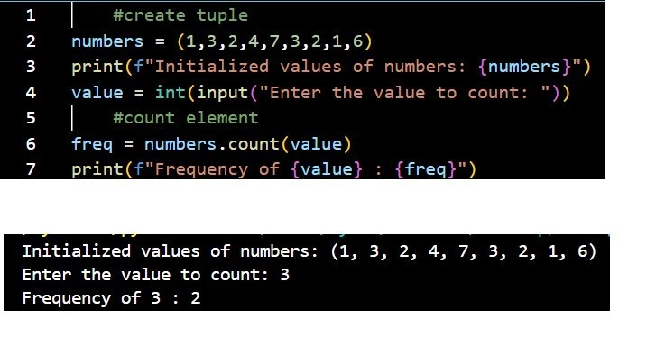
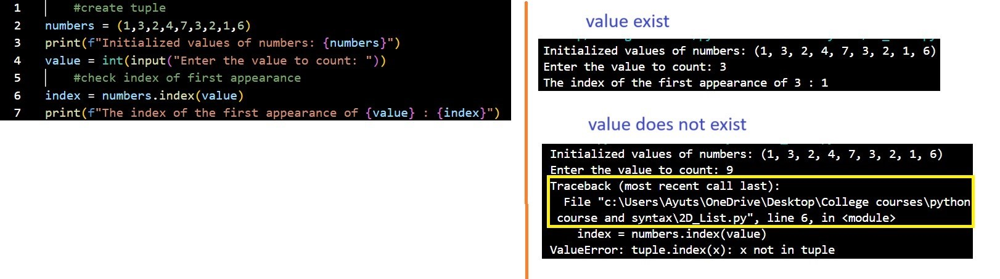

create tuple: tup_var = (elements)
access elements: tup_var[index]
access range of elements: tup_var[start:end]
tup_var : variable that contains the tuple
elements : values that are stored in the tuple
start : starting value in the range
end: ending value in the range
Line 2: Create tuple
Line 10: return single tuple
Lines 12,14,16: Return range of tuples
Returns a range of tuples. If the start or end parameter is left blank, it will default
to the range's default start or the lenght of the tuple
Extra:
1) tuples are immutable so their values cannot be changed
2)user cannot add or remove elements from the tuple
element frequency counter

count frequency: tup_var.count[element]
tup_var : variable that contains the tuple
.count : method that counts the number of appearances of an indicated element
element : a value one wishes to see the number of appearances in the tuple
check index of the first appearance of an element

code breakdown
first appearance index: tup_var.index[element]
tup_var : variable that contains the tuple
.index : method that returns the index of the first appearance of the indicated element
element: Value to check to see where the index of the first appearance exist
line 2: create tuple
line 6: check first appearance index
If value exists it will return the index of the first appearance and terminate the search.
If the value does not exist in the tuple it will return an error